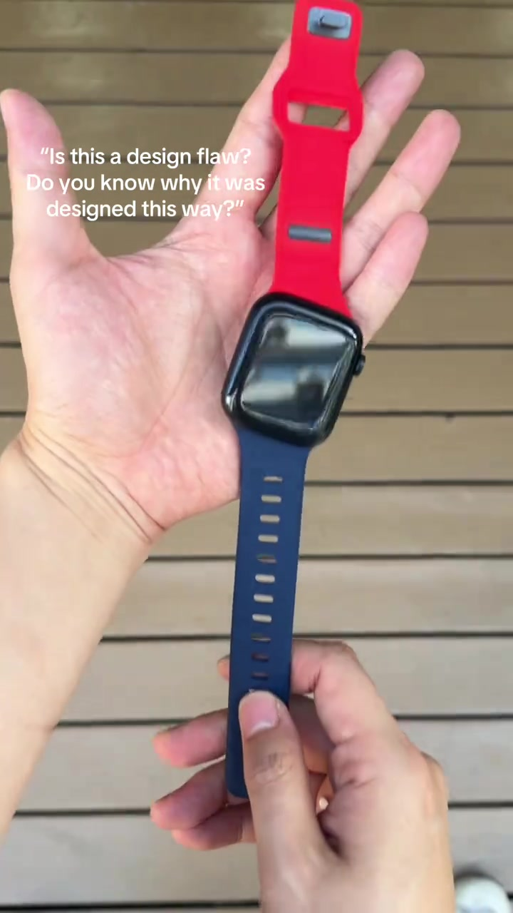
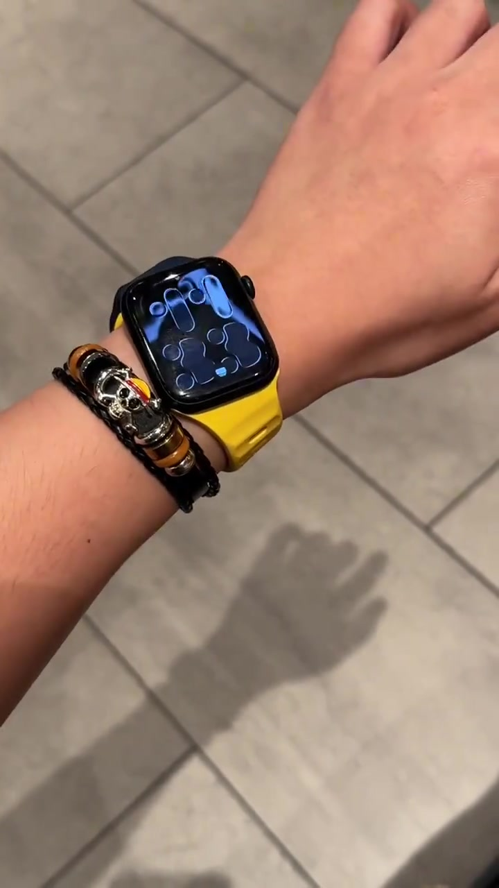
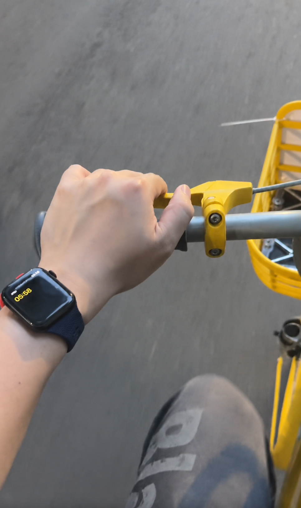

Brief de colaboración para creadores
Solo muñeca izquierda
Puntos clave de venta
Primero: parece que está “mal”
La forma inclinada no parece una correa normal a primera vista, lo que genera curiosidad, retención y comentarios.
Segundo: la inclinación tiene un propósito
Al entrenar, montar en bicicleta o conducir, puedes mirar la hora sin girar la muñeca deliberadamente.
Ángulo para muñeca izquierda
Esta correa está diseñada solo para la muñeca izquierda. El ángulo inclinado hace más cómodo mirar la hora al entrenar, montar en bicicleta o conducir.
Beneficios secundarios
Silicona suave
Ligera y cómoda para el uso diario, los desplazamientos y el ejercicio.
Perforaciones transpirables
Ayudan a reducir el calor durante el ejercicio y le dan a la correa un aspecto más ligero y deportivo.
Hebilla más segura
Es menos probable que se afloje durante la actividad, ideal para contenido de running, ciclismo y gimnasio.
Cómo grabar los primeros 3 segundos
No expliques demasiado. Haz que el público se pregunte si la correa está instalada al revés.
1. Haz que parezca mal instalada
Empieza directamente con un primer plano de la correa inclinada. No la expliques todavía.

2. Muéstrala en la muñeca
Ponte la correa y demuestra que no está rota ni instalada incorrectamente.

3. Mira la hora mientras pedaleas
Muestra cómo se puede ver la hora al montar en bicicleta o conducir sin girar la muñeca.

Secuencia de creación de contenido
Avanza por seis bloques en orden, llevando al público de la curiosidad a una razón de compra.
Genera curiosidad
Núcleo
¿Por qué está torcido mi reloj?
Genera debate
Núcleo
¿Es un diseño inteligente o simplemente raro?
Explica la función
Núcleo
Más fácil de mirar, con menos giro de muñeca.
Añade detalles del material
Núcleo
Suave, cómoda, resistente al agua y apta para el uso diario.
Amplifica el valor social
Núcleo
La gente preguntará por ella.
Cierra con razones de compra
Núcleo
Colores, packs, tamaños compatibles y precio promocional.
Video de referencia
Palabras restringidas
Puedes decir
- compatible with apple watch
- smart watch band
No digas
- Apple Watch band
Lista de entregables del creador
Entrega varios videos verticales para TikTok de 20-30 segundos, con un estilo nativo de creador. El creador debe aparecer en cámara, mostrar cómo se pone el reloj, cómo instala la correa y dirigir claramente al enlace del producto. Muestra claramente que esta correa es solo para la muñeca izquierda y luego destaca que permite mirar la hora con más comodidad.
Vertical 9:16
Hook en 0-2 s
Demostración en muñeca izquierda
Reloj no incluido
Elegir tamaño y color